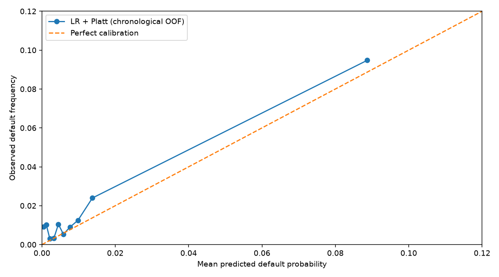
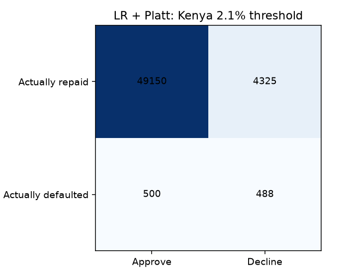
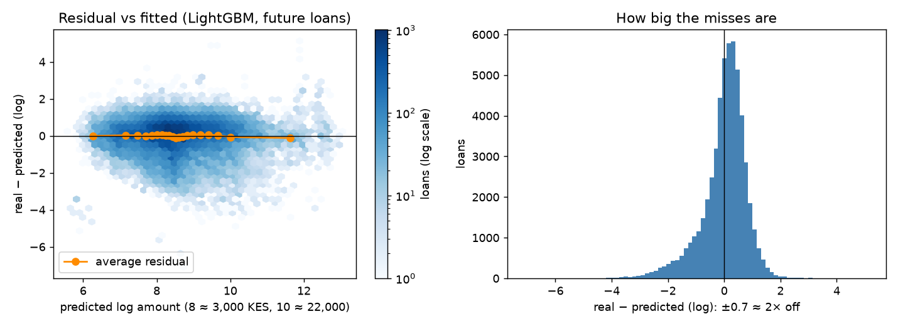

ICS553 Machine Learning Essentials, Prosit 2. MLE Group 1: Alice, Germain, Joseph, Liza. Ashesi University, November 2026.
Status: draft for the group to check and edit. Code, tables and decision records: github.com/ASU-MICS-2028/mle-group-1-prosit-2.
NkwaPay wants one tool to decide whom to lend to and how much, trained on labelled Kenyan loans and used in Ghana, where it has no labels. We built a logistic regression with Platt calibration for default risk (Task 2), a LightGBM model on log amount for limits (Task 1), and a scorer that returns a probability, a decision, a limit and up to three plain reasons.
Decision point. Application → decision → disbursement (disbursement_date) → due date → repaid or default. NkwaPay decides just before disbursement, so a clue is allowed only if it is known then.
Label. Task 2 predicts target (1 = the loan defaulted). Task 1 predicts Total_Amount. The brief's names IsDefaulted and ProductCategory don't exist in the data. We left out 190 loans not yet due when the data was collected, as their label isn't real yet.
Leakage audit. All 16 columns were audited (learnings/03_feature_audit.md). Total_Amount_to_Repay and Lender_portion_to_be_repaid include penalties added after default. With them, PR-AUC jumps from 0.20 to 0.91, a result that would vanish in real use. lender_id adds nothing as a clue and reveals the country, so it is used only as a fairness group.
Same 13 clues for both tasks (ADR 0012): loan_type, duration, New_versus_Repeat, and borrower history (earlier loans, known outcomes, past defaults, recency, recent loan counts, past amounts). History uses only outcomes whose due date had passed at decision time, via a backward join with no exact matches. Calendar and macro clues only helped when old and new loans were mixed, and hurt on future loans, so they are out.
Cost matrix (derived from the data; learnings/04_cost_matrix.md), for a typical 7-day loan:
| Typical loan | Fee if repaid (false positive cost) | Lost if it defaults: 90% of principal + chasing (false negative cost) | Decline above | |
|---|---|---|---|---|
| Kenya | 5,000 KES | 2% = 100 KES | 4,500 + 200 = 4,700 KES | 2.1% = 100 / 4,800 |
| Ghana | 3,000 GHS | 3% = 90 GHS | 2,700 + 16 = 2,716 GHS | 3.2% = 90 / 2,806 |
With calibrated p, declining is cheaper when p·FN > (1−p)·FP, so decline when p > FP / (FP + FN). Sensitivity: recovery of 0–30% or double chasing moves the cut-off only to 1.9–2.6% (Kenya) and 2.9–4.1% (Ghana). Counting lost repeat business moves it to 9.6% and 14.2%. A 10% recovery and the chasing cost are our assumptions. Business goal: minimise this expected cost, and report the approval rate instead of forcing a target. An 80% approval target was slightly cheaper on main costs (47.2 vs 49.0 KES), but far costlier once repeat business counts (122 vs 94), and it ignores how risk moves over time (07_cost_sensitivity_verified.csv).
Train.csv has 68,654 Kenyan loans with 1,258 defaults (1.83%). Test.csv has 18,594 unlabelled applications: 15,069 Kenyan and 3,525 Ghanaian, the latter from just 446 customers. About 4,306 customers appear in both, so we validate by customer. Loan amounts run from 2 to 23 million, so they are logged. Time matters: 92% of loans are from Jul–Dec 2022 at about 1% default, and later periods run at 5–15%. Selection bias: only 12% of defaulters ever borrowed again, so the data mostly shows people the lender kept lending to. Findex Ghana 2021 (n = 1,000) is used only as survey-weighted aggregates. No raw rows are in the repository or were given to AI tools.
Logistic regression. Model the log-odds as linear: log(p/(1−p)) = xᵀβ, so p = σ(xᵀβ) = 1/(1+e−xᵀβ). With independent Bernoulli labels, L(β) = Π piyi(1−pi)1−yi. Taking the negative log gives the cross-entropy, ℓ(β) = −Σ[yi log pi + (1−yi) log(1−pi)]. Using σ′ = σ(1−σ), the gradient is ∇ℓ = Xᵀ(p−y). There is no closed-form solution because p depends on β non-linearly, but ℓ is convex, so Newton-type solvers reach the optimum. Class weights multiply each term of ℓ, which distorts the probabilities: this is why our chosen model is unweighted and why cost cut-offs need calibration.
Linear regression. Assume y = Xβ + ε with ε ~ N(0, σ²I). The log-likelihood is −(n/2) log(2πσ²) − ‖y−Xβ‖²/(2σ²), so maximising it is the same as minimising squared error. Setting the gradient −2Xᵀ(y−Xβ) to zero gives the normal equations XᵀXβ̂ = Xᵀy, so β̂ = (XᵀX)−1Xᵀy when XᵀX is invertible. Ridge adds λ‖β‖², giving β̂ = (XᵀX+λI)−1Xᵀy, which is always invertible for λ > 0.
Gradient boosting. Build Fm(x) = Fm−1(x) + ν·hm(x), where each tree hm fits the negative gradient of the loss at Fm−1. For squared loss that is the ordinary residual y−F. For log-loss it is y−p. Full derivations are in knowledge/derivations.md.
Calibration and reasons. Platt scaling is fitted on out-of-fold scores from five customer-grouped folds. It multiplies each clue's log-odds push by one positive number, so it never reorders reasons. A reason is a theme's weight × (value − average applicant), kept if it raises log-odds by at least 0.2. This matched standard SHAP exactly (ADR 0017). All preparation sits inside a scikit-learn Pipeline, fitted within the training fold.
Three tests. Shuffled folds (the naive test), folds grouped by customer, and older → newer time blocks. We trust the time blocks most, because lending decisions concern future applicants. Seven classifiers and nine regressors were compared, including baselines.
| Model | PR-AUC shuffled | PR-AUC new customers | PR-AUC future loans | ROC-AUC future | F1 at 2.1%, future | Cost KES per loan, future |
|---|---|---|---|---|---|---|
| Majority baseline (approve all) | 0.018 | 0.018 | 0.018 | 0.500 | 0 | 85.3 |
| Logistic regression | 0.221 | 0.216 | 0.108 | 0.738 | 0.129 | 51.1 |
| Logistic, balanced weights | 0.217 | 0.210 | 0.105 | 0.742 | 0.133 | 59.3 |
| Random forest | 0.223 | 0.208 | 0.068 | 0.692 | 0.059 | 52.8 |
| k-NN | 0.181 | 0.169 | 0.064 | 0.627 | 0.039 | 61.1 |
| LightGBM | 0.238 | 0.195 | 0.057 | 0.682 | 0.072 | 56.7 |
| Pruned tree | 0.126 | 0.136 | 0.053 | 0.665 | 0.090 | 50.4 |
Means across folds or blocks (07_validation_comparison.csv), from the step 7 run. The pruned tree's cost is 0.7 KES below logistic regression, but its PR-AUC is half, and its scores are less suited to a cost cut-off.
11_fairness_by_group.csv, 54,463 loans, 988 defaults, 13 clues at 2.1%): PR-AUC 0.128 (0.110–0.154), ROC-AUC 0.824, F1 0.160 (0.146–0.174), lift 7.1, approval 89%, 55% of defaulters caught, cost 47.9 KES per loan against about 85 for approving everyone. Dropping three clues for fairness (section 7) changes cost by −0.6 KES, within noise.| Step 7 model, 4 future blocks, 2.1% | Repaid | Defaulted |
|---|---|---|
| Approved | 49,150 | 500 |
| Declined | 4,325 | 488 |


Left: reliability curve. Right: confusion matrix, from the step 7 run.
| Model (future loans) | MAE log | RMSE log | MAE KES | RMSE KES | Within 2× |
|---|---|---|---|---|---|
| Guess the average | 0.972 | 1.262 | 12,149 | 110,139 | 44% |
| OLS | 0.630 | 0.822 | 13,834 | 167,858 | 64% |
| Ridge | 0.630 | 0.823 | 13,802 | 167,314 | 64% |
| Lasso | 0.628 | 0.820 | 12,860 | 152,290 | 65% |
| SVR | 0.592 | 0.860 | 9,112 | 106,291 | 71% |
| Random forest | 0.583 | 0.795 | 8,393 | 103,648 | 70% |
| LightGBM | 0.581 | 0.796 | 8,463 | 103,474 | 70% |
LightGBM's lead over Ridge is real: −0.049 MAE log (95% range −0.054 to −0.045). Random forest is about level with it. Past amounts do most of the work. Limit rule: the amount 75% of similar recent borrowers got at most. 74% of borrowers fit under it, against 53% with "same as last loan", and only 5.9% of money lent goes to loans that default, against 7.5% (15% with no limit). For reserves, use the average with smearing: typical amounts add up to only 69% of the total, and smearing brings that to 98%. First loans are over-predicted by about 1.4×.

Residuals against fitted values, LightGBM on log amount.
Shift. A classifier separates Ghana from Kenya with ROC-AUC 1.00 (control, Kenyan train vs test: 0.50). It stays at 0.90–0.94 without loan_type and outcome clues. 87% of Ghanaian loans use a type never seen in Kenya, 97% use unseen lenders, no Ghanaian has a known repayment, and loans are about 8× bigger in dollars. Importance weights fail: effective sample size is 19 to 2,757 of 68,464, and every weighted model is worse. Amounts: we can check these on real Ghanaian amounts: log MAE 0.45 in cedis against 0.51 in dollars, with over-prediction on first loans (3.4×), loans over 90 days (3.1×) and Type_2 (2.8×).
Group evidence from Zindi. Ghana has no labels for us, but Zindi scores every row. A file flagging one group has F1 = 2·d / (k + P), where d is the defaults in the group, k its size and P all defaults. Twenty files, uploaded with Zindi's rules checked, gave totals per group, never per person. F1 scores are exact fractions, which gave whole counts and a unique split of 4,649 public and 13,945 private loans. Two checks: all group parts add up to their sizes, and Kenya comes out at 275 of 15,069 (1.8%), matching training. These counts come from the test set, so any later model built on them can't report a clean Zindi score. Our three scores in section 4 predate this.
| Ghana group | Loans | Defaults | Rate | Cautious range (customers, not loans) |
|---|---|---|---|---|
| All | 3,525 | 447 | 12.7% | 9.9–16.1% |
| Type_2 (median loan 76,970 GHS) | 449 | 226 | 50.3% | 43.8–56.8% |
| Type_3 | 3,039 | 213 | 7.0% | 4.2–11.4% |
| Type_3 first loans | 296 | 29 | 9.8% | 6.4–14.6% |
| Type_3, safest 60% by model score | 1,823 | 88 | 4.8% | bands reach about 2% to 11–13% |
| Type_3, riskiest 40% | 1,216 | 125 | 10.3% | band 4: 6.2–16.8% |
This overturned our earlier plan to drop loan_type in Ghana. Cost per applicant at 3.2%: approve all 344 GHS; unseen types as Type_1 170; final no-type model 156; no "borrow often" clues 147; no loan_type 142; all 13 clues 105; decline all 79.
Every policy tested. 729 ways of giving six groups a full loan, a starter or a decline, at four repeat values (0, 16, 180 and 360 GHS): 2,916 scenarios. No full-size loan is in the cheapest policy at any value. Our rule (Type_3 starter, rest declined) costs 89, 90, 102 and 114 GHS across those values, against 79, 93, 236 and 393 for declining everyone. It beats declining everyone above about 13 GHS of repeat value.
| Stress test (rules set in advance) | Result | Pass? |
|---|---|---|
| Beats full-size policies on both data parts and in 95%+ of rate draws | Both parts yes; only 77–87% of draws | No |
| Beats them in 90%+ of 2,880 assumption combinations | 78% | No |
| Against decline-all: at most +15 GHS with no repeat value; wins 50%+ at 16, 95%+ at 180, 360 | +10; 63%; 100%; 100% | Yes |
| Beats full-size on real loan amounts | Yes | Yes |
| Beats full-size if starters default twice as often | Yes, narrowly at no repeat value (101 vs 102) | Yes |
| Within 15 GHS of the cheapest, including out-of-part | At most 10.1 | Yes |
None of the 729 policies passes either failed test, and none passes more than 4. It loses money without repeat business: per 1,000 applicants it lends 258,638 GHS, earns 7,215 and loses 17,282. So we present it as a capped pilot, the cheapest way to learn, not a proven product. Evidence needed for full use: about 5,000 labelled Ghanaian loans (about 90 defaults at Kenya's rate; lift range 4.9–10.9), Platt recalibrated on Ghanaian outcomes, monthly drift checks (PSI above 0.25 investigated), and pilot default compared with these group rates.
The full audit, Model Card, datasheet and regulatory map are delivered separately (report/audit.html). Priority: sufficiency first (one score means one risk for everyone), then equal rates of wrongly declined good payers. Approval rates are reported only. These can't all hold when true default rates differ, and first loans do default about 8× as often.
| Group (future Kenyan loans) | Approved | Good payers wrongly declined | Actual default | PR-AUC |
|---|---|---|---|---|
| First loans | 45% | 53% | 10.9% | 0.274 |
| Earlier loans, known outcomes | 92% | 8% | 1.3% | 0.075 |
| Smallest quarter of loans | 93% | 7% | 1.4% | 0.034 |
| Largest quarter of loans | 84% | 15% | 3.0% | 0.200 |
| Lender A (95% of loans) | 93% | 6% | 1.4% | 0.083 |
| Lender B | 19% | 80% | 8.4% | 0.120 |
The first-loan gap in wrongly declined is 45 points (95% range 43–48). PR-AUC isn't comparable across groups with different default rates. The limit model offers the smallest quarter 2.8× their usual loan, so it is generous rather than regressive, with its own debt risk.
Proxies: the other clues reveal a first loan perfectly (AUC 1.00) and lender and country nearly so, so hiding tenure backfires (approval 41% vs 45%). Mitigations tested: starter loans of 10–50%, group cut-offs, reweighing and dropping clues. We tested 1,224 combinations. Chosen for Kenya: drop the three "borrow often" clues (free, and removes "you haven't borrowed recently", which 31% of declined Kenyans were told), and give first-timers above the cut-off a 10% starter below 24% risk. Good first-timers refused fall from 53% to 4%. Cost is +0.9 KES (−0.5, 2.4) on future loans, or −3.4 (−4.9, −1.9) at the measured repeat value of about 200 KES. It narrowly misses our rule on the new-customers test (+1.7, range 0.9–2.3), which we report. Repeat value is fragile: across all repaid first-timers it is negative.
Findex. 68% of Ghanaian adults have an account, 60% have mobile money, and about 93% haven't borrowed from a bank or by mobile money. Gaps in accounts: women 63% vs men 74%; poorest 40% 55% vs richest 60% 77%. The original model would widen access gaps by declining every first-timer. Our rule narrows them for Type_3 applicants, but 55% of Ghanaian first-time applicants are refused, because they ask for Type_2. It can't reach the 40% with no mobile-money account. The data has no gender column, so gender can't be audited directly.
Compliance. The clearest gap is that Act 726 s.26(4) requires a credit-bureau search before every decision, and we have no bureau feed. Others: decision logging, a digital review route (Directive 2.3(1) bars manual approval from the physical office), DPIA and registration, a customer limit, and affordability checks. We are students, and this isn't legal advice.
score(application) in src/scorer.py takes 14 required fields and refuses anything else, so sensitive fields can't slip in. It returns the probability and its source, approve / starter / decline, a limit, up to 3 reasons, and notes. 18 tests pass. All 18,594 Zindi applicants are accepted, giving Kenya 82.1% approve, 8.8% starter, 9.1% decline, and Ghana 86.2% starter, 13.8% decline. Latency over 1,000 calls: Kenya median 29 ms (95% under 37 ms), Ghana under 0.1 ms; loading takes 1.6 s. Testing found a real flaw: a made-up borrower who defaulted on all 3 earlier loans was approved at 1.9%, as only 122 labelled loans follow a default and the model barely weighs them. Declining 2+ past defaults or a 50%+ past default rate changes no historical decision and costs nothing. Hiding six Kenyan loan types showed that declining unseen types is cheapest (90.7 KES per loan, vs 94.1 for the model and 141.9 for a starter).
From a fresh clone: uv venv --python 3.12 && uv pip install -r requirements.txt, put the data in data/zindi/ and data/worldbank/, run .venv/bin/python src/features.py, execute the notebooks in order, then run src/scorer.py --fit, tests/test_scorer.py, src/fairness_scenarios.py, src/zindi_submissions.py --read-exact and src/ghana_rule_tests.py. Seeds are fixed. Steps 9–10 were rerun from a fresh clone: 27 of 31 tables matched exactly, and 4 differed only at the third decimal. Every result is listed in learnings/results_index.md; decisions are in docs/adr/ (22 records), actions in docs/log.md.
We used Claude Code throughout, as logged line by line in docs/ai_use.md. From the first week it helped draft the plan, course notes and data checks. It wrote or drafted much of the code, notebooks, decision records and write-ups, including steps 8–12 in full, at members' request, and it drafted this report, the audit and the slides from our saved results. Only aggregates and made-up applicants were shared with it, never raw data rows. Humans set the direction, approved decisions and uploaded the Zindi files. [Each member: before submission, check your sections against the code and results, correct this statement to match what you actually did, and be able to explain and reproduce your part without AI, as the course requires.]